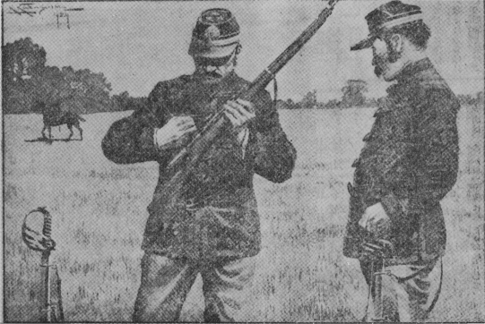

昨年オランダに開かれたオリンピック大会で、わが日本選手が三
段とびの第一等に入選したとき、
私たち内地の日本人がどんなに喜んだかは、おそらくまだ
皆さんの
記憶にあらたなるところであると思います。あの新聞記事を読んだせつな、思わずも私の目には熱い
涙がたまりました。すべての競技がそうでありますけれど、なかんずく国際競技ほど人の血をわかし肉をおどらすものはありません。
今からおよそ五十余年の
昔、
普仏戦争の起こるすこし前、フランス陸軍省の
主催でパリーの
郊外に射的大会が
開催されました。当時フランスには世界各国から軍事研究者が留学にきていて、わが日本からも十人余りの士官が
派遣され、それらの人々が射的大会に
招待されたのでありますから、いわば国際射的大会となったわけです。
当時日本人は、
欧州人から見れば、まったく
眼中になかったのであります。日本という国さえも
認められてはいないくらいでした。そうして、日本人そのものはといえば、
欧州人よりも体格は
劣るし、有色ではあるし、言語も不自由であるから、自然
軽蔑されたのも無理はありません。
けれども日本人には、祖先伝来の日本精神があります。いかなる
困難とも戦って、あくまで目的に進むという
尊い精神があります。その精神がことごとにあらわれますから、当時の
滞仏士官も、さほどの
屈辱を受けずにすみました。その
証拠には、
射的大会へ
招待されたのでもわかります。
大会へ招待されたのは、当の
仏国のほかに、
英、
独、
露、
伊、
西、
日の六ヵ国でした。前日予選が行なわれましたが、
仏、
英各三人、
独、
露各
二人、
伊、
西、
日各
一人が選にはいっただけでありました。この予選にはいった十三人が、
翌日晴れの競技を行なうことになったのであります。日本人で入選したのは
Ｍという
陸軍工兵大尉でありましたが、予選の点もはなはだふるわず、かろうじて入選したくらいでありました。
その日、
同僚の士官たちは、
Ｍ大尉をかこんで、
「おいＭ、
明日はしっかりやってくれ、日本人の名声をあげるには
絶好の機会だ、どうか祖国のために
万丈の
気炎をはいてくれ！」
と、口をそろえて
激励しました。
Ｍ大尉は、
歩兵銃の研究にきていたのでして、いわば
射撃では専門家なのです。Ｍ大尉は静かに語りました。
「ありがとう。おおいに注意して見苦しい成績はあげぬつもりだ。
今日の不成績は、ひきょうないい方だが、
銃がよくなかったというよりも、ぼくの使った
銃の研究がたりなかった。
明日の競技につかう銃はここへ
貰ってきてあるから、これから
諸君とともに、この銃の研究にゆきたいと思う。いっしょにきてくれないか」
だれも
異議のあるはずがありません。一同は、
射的場近くの野へ出て、
Ｍ大尉の
射撃演習を手伝いました。ごしょうちのとおり、銃には一本一本
違った個性があります。同じ人間が作った銃でも、それぞれ、その
弾道だとか、
着弾距離だとかがちがいます。それゆえ、射撃を行なう前には、銃の個性を十分研究しなければならないのであります。
Ｍ大尉はおよそ二時間あまり熱心に研究しました。的を
射ては、
弾丸のあたった場所をしらべて研究すること、数十回におよびました。
「よし！」
最後にＭ大尉はきっぱりといいました。
「
明日はだいじょうぶだ！ けっしてヒケをとらぬつもりだ！」
そう自信ありげな口調に、士官たちは
歓声をあげて引きあげました。
いよいよ大競技の当日がきました。四月の空はうるわしく晴れて、遠くに見ゆる
伽藍の
塔が絵のようにかすんで見えました。早くも
観衆は場外にあふれ、勇ましい軍楽隊の
合奏が天地に
響き
渡りました。
はるか二百メートルをへだてたかなたに十三個の的が
土手の前に
並び立っております。こちらから見ると、まるで一点にしか見えません。それほど当日の的は小さかったのであります。
普通は大きな的で、あたり場所によって点数がきまるのですが、この日は、あたれば十点、あたらねば
零点、しかもわずかに三発しか与えられていないのであります。
先ず十三人の順序が抽せんによって定められました。すると、どうであろう、わが
Ｍ大尉は
縁起悪くも最後の十三番となりました。西洋では十三という数を
忌みきらいます。その忌まれている数を、日本人が引きあてたのです。わが
応援の士官たちも思わず顔を見合わせましたが、Ｍ大尉の顔はりんとして
輝いているだけでしたので、人々はまずあんどの
胸をなでおろしました。

いよいよ第一番のドイツ人が火ぶたを切りました。ドン！ と一発。
人々はかたずをのんで、的の下の
壕からの合い図を待ちました。赤い旗が出て上下に
振れば十点、黒い円形の
弾痕指示器が出て左右に
振れば
零点なのです。
ヒョイと出たのは黒い指示器。それが左右に振れました。ああ！
ついで第二番、第三番と進みましたが、いずれも
零点ばかり、最後に
Ｍ大尉の番になりました。ああ。見ていた日本士官たちの心はどんなだったでしょう。
やがてドンと一発！
おお！ 赤い旗が上下に！
揺れる揺れる。
わッ！ という
歓声は天地を
轟かしました。日本士官は思わずも
抱き合って
踊り上がりました。しばらくはすべての人の
拍手が鳴りやまなかったのであります。この光栄、この
名誉！
ついで第二回目になりました。第一番のドイツ人はみごとにあてました。それからあたらぬ人とあたった人が
相伯仲し、最後にＭ大尉の番になりました。人々はいっせいに注目しました。
ドン！
ああ、あわれ、黒い指示器が。
士官たちの
歎き！ けれども当の
Ｍ大尉はすこしも
落胆しないのみか、にっこりとしておりました。
ついで第三回。その結果二十点を取ったものはドイツ人とフランス人が
一人ずつで、スペイン人が
零点。あとは十点ずつでした。もしＭ大尉があてれば、三人の決選になります。
そのときの
応援士官の心持ちはどうでしたでしょう。日本の名誉はこの一発にかかっております。
ところがです。あわれにも第三回の
発射には黒い指示器が左右に
振られたのであります。
審判官はまさに宣言をくだそうとしました。
そのときＭ大尉はつかつかと進みよって、りゅうちょうなフランス語で大声に申しました。
「
審判官殿。
私はたしかに三回とも的を
射あてました。けれども、それは
壕の中にいる人にわからなかったのであります。第二第三の
弾丸は第一の弾丸のつらぬいたあなを通ったはずです。どうか
土手を
掘って弾丸の位置をおしらべください」
このことばに人々は
Ｍ大尉が
発狂したのではないかと思いました。けれども自信ある
態度におかすべからざる
威厳がありましたから、
審判官は、
大尉のねがいをききました。
やがて
土手が
掘り返されました。
見よ、そこには三発の
弾丸がねずみのように重なっていたではありませんか。
この
奇蹟！ この
妙技！
再び起こる
喝采の声！ かくて
Ｍ大尉は第一等の
栄冠を
得て、予定通りわが日本のために
万丈の
気炎をはきました。
（昭和四年四月号）